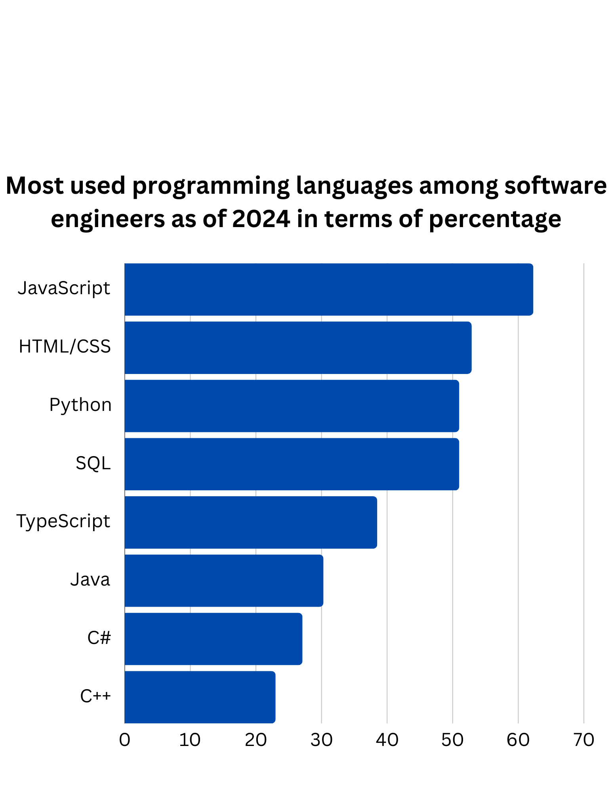

Education
The first step to becoming a software engineer is getting an education. Education provides aspiring software engineers with the knowledge and skills needed to enter the field of software engineering.
College education
College is by far the most popular education path for software engineers. In fact, as of 2024, 73 percent of software engineers working in the United States of America have obtained a bachelor's degree. A bachelor's degree is usually the minimum education requirement for software engineers, but obtaining a master's degree can also be beneficial as it can allow you to conduct research, earn more money, and pursue management and information security careers.
Coding boot camp
A coding boot camp can help prepare you to succeed in the technology industry by teaching you skills required for web development and computer programming. That said, even though boot camps tend to focus more on web-based coding than software engineering, attending one can still be a viable option. Attending a coding boot camp can be worth it, especially if an individual does not have the resources to attend university. Coding boot camp is more fast-paced than university in that it takes around three to six months to finish a course. Coding boot camps also offer more flexibility; many provide both virtual and in-person courses to meet scheduling needs.
Self-taught
Learning the fundamentals of software engineering through self-teaching is the least common path of education. That said, you can still achieve a great education just as long as you stay on track and work diligently. As an autodidact, you have the independence to choose what specific skills you would like to learn and acquire. For instance, as an autodidact, you can learn coding skills by using websites such as edX, Coursera, and Udacity. Although self-directed learning can be beneficial for some, the majority may be better off learning via college and coding boot camps.

Programming languages
Programming languages are pivotal for succeeding as a software engineer. It is vital to understand that you will never know too much when it comes to programming languages. You will always have more to learn which is why it is a good idea to stay up to date with languages.
Python
Python, a general-purpose language, is known for its simplicity, readability, and flexibility. Python is good for beginners to learn; it has a large community and the language is used to create websites, apps, robots, and more.
Java
Java is a well-known language that is regarded as versatile, object-oriented, and more. It is predominantly used to create applications such as web servers, apps, and enterprise systems.
JavaScript
JavaScript is mainly used to make a website interactive. JavaScript involves the implementation of buttons, animations, and feedback on forms. It allows web pages to update content without the need to refresh, animate graphics, and respond to user actions. 
Soft Skills
Soft Skills are personal traits that help individuals work well with others. Communication, teamwork, adaptability, and problem-solving are all related to soft skills. These skills are often not mentioned in fields like software engineering; however, they are essential for interacting, listening, and collaborating within the workplace.
Communication
As a software engineer, you must be able to explain technical concepts in a way that everyone in your workplace can understand. It is also vital that you document effectively and maintain clear communication within your team.
Teamwork
Software engineering typically involves a team, rather than one individual. Projects will often involve a team of designers, project managers, and other engineers. Being able to share your knowledge, support your team's work, and listen to different opinions, will help you succeed in teamwork. This in return makes you a valuable employee.
Problem solving
Problem-solving is arguably the most important soft skill for software engineers. Engineers are meant to solve problems. So, given that software engineers face complex challenges that require logical thinking and creative solutions, being able to problem-solve is a must.